Zettelkasten: как один немецкий учёный стал невероятно продуктивным
Это перевод статьи Дэвида Клира о методе ведения заметок Zettelkasten, благодаря которому немецкий социолог Никлас Луман написал более 70 книг и 400 научных статей. Стоит читать, если вы хотите создать собственную базу знаний, систематизировать идеи и перестать забывать важные мысли.
Статья бережно перенесена из блога бегущего редактора. Кстати, следить за анонсами новых статей можно в моём телеграм-канале. Подписывайтесь, чтобы ничего не пропустить!
Никлас Луман был невероятно плодовитым исследователем. За 40 лет своей деятельности он опубликовал более 70 книг и 400 научных статей, охватывающих широкий спектр тем: социологию, биологию, математику, кибернетику и информатику. В среднем он писал более семи книг каждые четыре года своей карьеры, а ещё бесконечное множество статей. И это была не сляпанная на скорую руку чепуха. Книги стали классикой, которая сделала Лумана одним из самых важных социологов двадцатого века (пдф).
Продуктивность Никласа ещё более впечатляет, если подумать о том, насколько старые инструменты он использовал. Перед самой смертью в радио-интервью Вольфгангу Хагену Луман рассказал, что не пользуется компьютером, только ручкой, бумагой и печатной машинкой, на которой печатает неумело, двумя пальцами.
Когда его спрашивали о том, как он смог опубликовать так много, Никлас обычно отвечал: «Я не придумываю всё самостоятельно. Большая часть работы происходит в моём Zettelkasten. Я обязан своей продуктивностью именно этому методу». (первоисточник на немецком).
Из-за таких утверждений система Zettelkasten Лумана приобрела мифический статус и так высоко ценится, что уже сама стала предметом исследовательского проекта. Луман никогда не скрывал своего метода, к тому же он достаточно прост. И это отлично! Мы можем перенять подход невероятно продуктивного социолога и получить те же самые преимущества, которые сделали его настолько выдающимся в интеллектуальном плане. Zettelkasten помог Луману:
Так что если вы пишете нехудожественную литературу или работаете в сфере интеллектуального труда, то просто обязаны узнать о методе ведения заметок Zettelkasten.
Что такое Zettelkasten?
Луман описывает Zettelkasten с нескольких сторон. Иногда он называл его партнёром для беседы или второй памятью, кибернетической системой, жвачкой, а иногда отстойником.
Жвачкой? Отстойником? Что, чёрт возьми, он несёт?
Давайте начнём со слова «Zettelkasten». Оно пришло из прагерманского языка и состоит из двух корней: «Zettel» значит заметка или листок бумаги, и «Kasten» — коробка. Zettelkasten в таком случае это просто коробка с заметками, которую часто называют картотекой.
Zettelkasten Лумана был предметом мебели. Это шесть стеллажей, в каждом из которых по четыре деревянных выдвижных ящика, заполненных до краёв бумажными заметками. Вот как он выглядел.
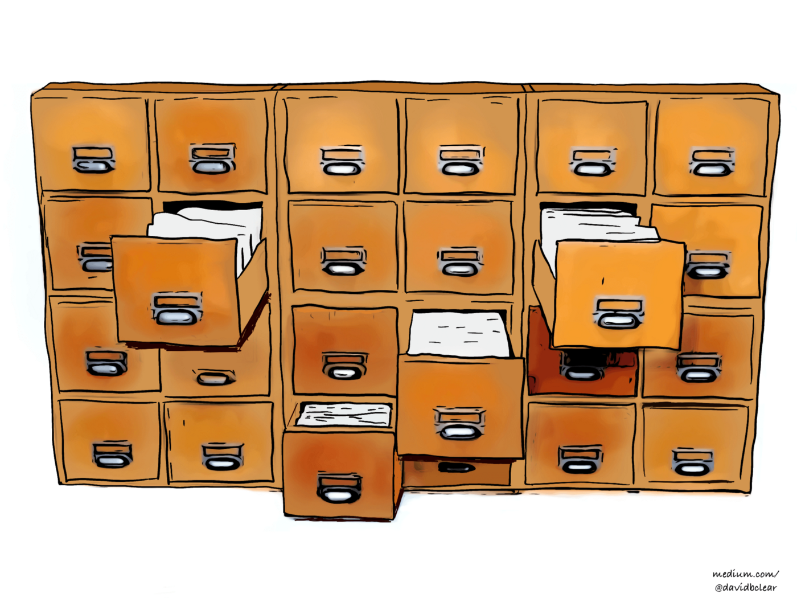
Изображение предоставлено автором. (CC BY-SA 4.0)
Немного разочаровывает, правда?
Предмет мебели? Так вот, что сделало Лумана таким продуктивным?
На самом деле нет. Это как дать карандаш Неандертальцу, а тот спросит: «И всё? Эта маленькая палочка позволяет вам навсегда запоминать вещи, связываться друг с другом через пространство и время?»
Как вы увидите метод Zettelkasten, также связан с предметом мебели, как письмо с маленькой палочкой. Но перед тем как мы разберём сам метод, давайте перечислим недостатки других систем ведения заметок.
Почему другие системы ведения заметок не оправдывают ожидания
Если вы похожи на меня, то перепробовали все возможные способы ведения заметок:
Проблема всех этих подходов в том, что они на самом деле не помогают находить связи между идеями. Напротив, они запирают идеи так крепко, что в конечном счёте они окажутся забыты в коробке под кроватью, облаке или папке где-то на компьютере.
Представьте, что вы прочитали популярную научную книгу три года назад, книгу об управлении личными финансами год назад, а сейчас читаете статью в блоге о том, как быть более продуктивным. Каждый из этих источников несёт идеи, которые могут быть связаны между собой. Более того шесть месяцев назад вам могла прийти умная мысль, которая была связана со всеми этими идеями. Но теперь вы не можете увидеть этой связи между. Почему? Возможно, вы не сделали никаких заметок. Но если и сделали, то всё равно вам что-то помешало.
Если вы записали заметку в бумажный блокнот, то зафиксировали её в хронологическом порядке. Идеи приклеились к страницам, как если бы вы их забетонировали. Если между идеей в конце 17 страницы и идеей вверху 89 страницы есть связь, то вы скорее всего её не увидите. У вас будет такая же проблема с пометками на полях книги или распечатки.
Обычно цифровые заметки ничем не лучше. Такие инструменты как Эверноут быстро превращаются в свалку из-за ошибки коллекционера — склонности собирать кучу информации без того, чтобы её как-то обработать. Если вы ведёте заметки в файлах и папках на компьютере, то очень скоро о них забудете, а документы покроются цифровой пылью. И если вы не забудете о своих заметках, они всё равно будут организованы таким образом, что сам чёрт ногу сломит строить между ними какие-то связи.
С другой стороны интеллект-карты, концепт-планы и древовидные списки ближе всех подобрались к идеальному решению. Эти инструменты помогают находить связи между идеями. Проблема только в том, что они хорошо работают с несколькими дюжинами идей. Вы не будете собирать 90 000 идей в одном концепт-плане на протяжении 40 лет и прорисовывать между ними связи. Но это именно то, что Луман сделал с помощью Zettelkasten!
Что делает подход Лумана уникальным
Если бы Луман вёл заметки в блокноте, то они выглядели бы примерно так:
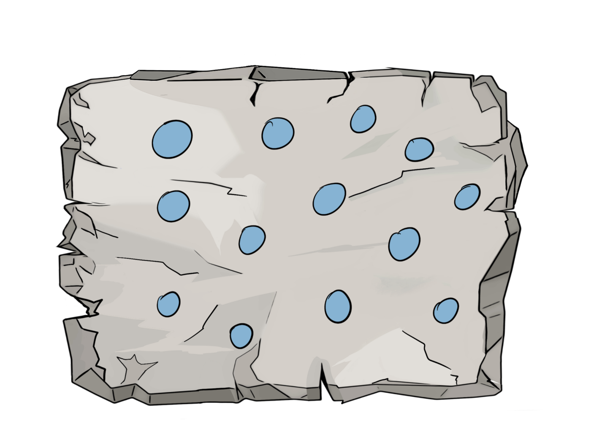
Изображение предоставлено автором. (CC BY-SA 4.0)
Заметки были бы замурованы в неизменной структуре, где их невозможно поменять местами.
Если бы он держал их на карточках или листках бумаги без какой-либо организации, то они выглядели бы следующим образом:
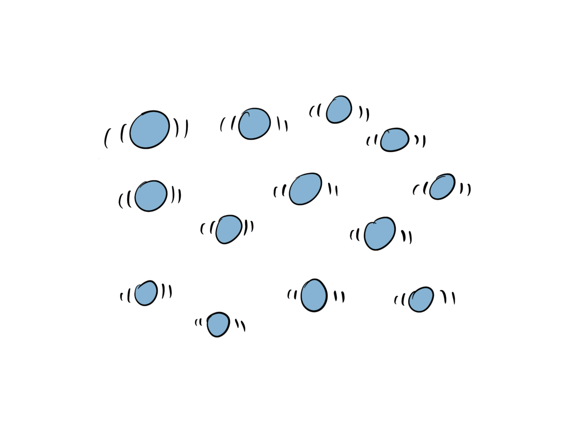
Изображение предоставлено автором. (CC BY-SA 4.0)
Заметки были бы в свободном плавании, но невозможно было бы отследить, как они связаны между собой.
Луман мог бы сделать то, что в то время часто делали любители папок, и держал бы заметки на карточках, разложенных по категориям в разных ящиках или конвертах. В итоге получилось бы что-то такое:
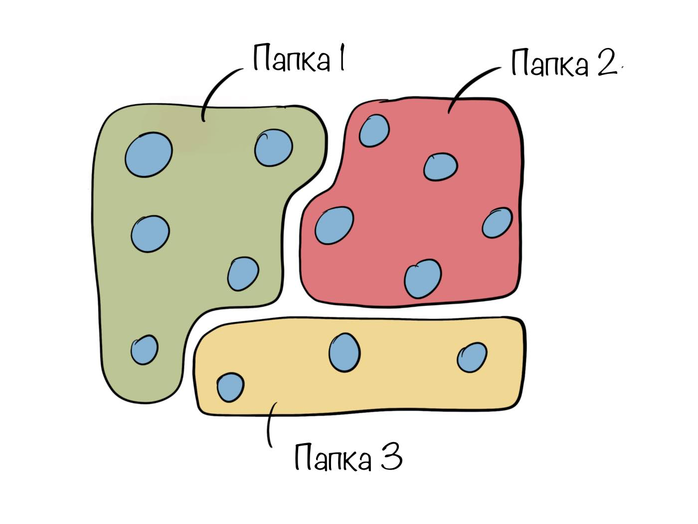
Изображение предоставлено автором. (CC BY-SA 4.0)
Это создаёт организацию и выглядит опрятно.
Проблема этого подхода в том, что каждая папка создаёт отдельное изолированное хранилище, но идеи в реальном мире редко можно отнести к простым категориям. Например, идея сложности представлена в биологии, физике, математике, обществоведении, технике и кто знает, где ещё. Так что в какую папку вам положить заметку о концепции сложности?
Другая проблема подхода, основанного на папках, в том, что он затрудняет создание связей между идеями, которые положили в разные папки. Каждая заметка относится к другим в той же самой папке, но она может также быть связана с заметками в других папках. Например, заметка из Папки 1 может также содержать идеи, которые относятся к другим заметками из Папок 2 и 3. С папочной структурой вы не можете сохранить и проследить эти взаимосвязи.
Можно попробовать внедрить подход, в котором вместо папок используются теги:
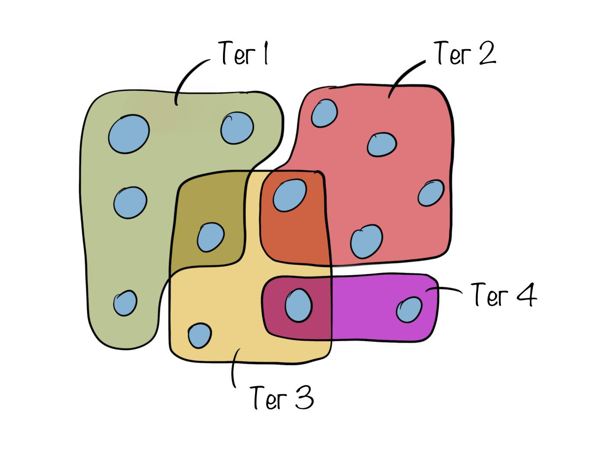
Изображение предоставлено автором. (CC BY-SA 4.0)
Это большой шаг вперёд по сравнению с папками, потому что теперь категории не являются взаимоисключающими. Заметка может иметь больше одного тега, а вы можете увидеть разом всю коллекцию различных точек зрения, в зависимости от того, на каком теге фокусируетесь.
Теги уже повсюду и многие приложения для заметок их поддерживают. Но вам не нужно использовать какое-то модное приложение. Луман знал о них и использовал в своём бумажном варианте Zettelkasten.
Несмотря на преимущества тегов, Луману их было недостаточно. Он всё равно видел в них слишком много ограничений.
Любой человек может подтвердить, что если подшить тысячи заметок и скрупулёзно их тегировать, то отдельные теги не сильно помогут увидеть связи между заметками. В реальности, если к отдельному тегу относятся тысячи заметок, вся коллекция будет не менее запутанной, как если бы вообще не было никакой системы организации. В конечном итоге каждый тег превращается в большую беспорядочную свалку.
Луман пошёл на шаг дальше. Вместо того, чтобы полагаться только на теги, он также связал заметки между собой. В результате получилась такая система:
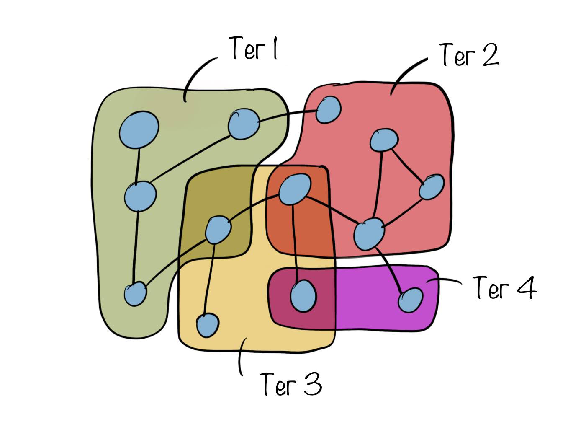
Изображение предоставлено автором. (CC BY-SA 4.0)
Заметки и идеи не просто связаны между собой, их связи можно явным образом отследить. Это создаёт сеть идей и даёт огромные преимущества.
Воспринимайте это так. Интернет или всемирная компьютерная сеть, если быть точнее — это также сеть идей. Когда вы кликаете на ссылку, например на эту, вы перемещаетесь с этой страницы (которую читаете прямо сейчас) на домашнюю страницу Википедии. Оттуда вы можете кликнуть на следующую ссылку и таким образом перейти с одной страницы на другую, исследуя Сеть.
Теперь представьте, что вместо того, чтобы объединять знания в Сети, все сайты просто сложили в одну папку без ссылок. Все страницы Википедии, все посты в блогах, все истории в Медиуме, все статьи различных новостных изданий, все видео на Ютубе, бессчётное количество страниц, которые образуют интернет. Все их свалили в кучу внутри одной папки. Вы никогда не сможете в этом разобраться.
Теперь представьте, что кто-то предложил использовать теги, чтобы навести порядок в этом хаосе. Скорее всего эта идея покажется вам бредовой. Чего? Мне нужно организовать бесконечное множество сайтов в этой папке, используя что? Миллион тегов? Это противоречит здравому смыслу!
Нет, решение, чтобы организовать огромный объём информации и сделать его понятным, это использовать сеть. Вот почему сайты по всему миру, как нейроны в вашем мозге, организованы в сеть. И вот, почему вам следует соединить все интересные идеи, которые вы хотите отслеживать на протяжении жизни, в сеть заметок.
Главное преимущество Zettelkasten
Используя метод Zettelkasten, вы превращаете заметки в элементы, вплетённые в большую сеть идей. Вместо того, чтобы разрушаться из-за добавления новых элементов в систему, наоборот, она становится лучше. Прямо как ваш мозг. Никто не скажет, что большее количество нейронов делает вас тупее. То же самое с Zettelkasten. Чем больше заметок, тем больше идей и связей, тем «умнее» становится Zettelkasten, а ваши публикацию получают дополнительную глубину.
Разговор о том, что Zettelkasten становится умнее, это не просто красивая метафора. Луман относился к этому вполне буквально.
Позвольте объяснить.
Клод Шеннон, отец информационной теории, изучал коммуникацию и потребность оценки количества информации, передаваемой при взаимодействии двух объектов. Оценку, которую он нашёл, назвали собственной информацией (также известной как объём информации или шенноновская информация). Шеннон определял, сколько информации содержится в сообщении, зависит от того, насколько оно удивляет.
Подождите, что? Более удивительное, значит более информативное? Именно так!
Представьте, что вы задаёте утке вопрос и получаете в ответ «кря». Затем вы задаёте утке другой вопрос и снова получаете «кря». Вы спрашиваете снова и снова, а глупая утка продолжает крякать. До вас быстро доходит, что вы не общаетесь. Не происходит ничего необычного. Утка не передаёт никакой информации. Она просто крякает. Это не беседа с умным партнёром.
Теперь сравним это с уже сформированным Zettelkasten, который содержит тысячи и тысячи идей. У вас есть вопрос, с которым вы погружаетесь в Zettelkasten, передвигаясь от одной идеи к другой по ссылкам между заметками. Так как здесь так много идей, которые вы собирали на протяжении последних лет, то скорее всего вы давно забыли большую их часть. Zettelkasten раскрывается через идеи, которые вы добавили в него годы назад и больше не помните. Таким образом, погружаясь всё глубже и глубже в поиске ответа на свой вопрос в Zettelkasten, вы получаете ответы в неожиданной форме. Таким образом система умнее утки, и именно из-за этого Луман называл его партнёром для беседы.
Конечно, чтобы использовать эти преимущества, Zettelkasten должен дозреть до определённого уровня. В самом начале, когда он содержит всего несколько заметок, вы не удивитесь от результатов, так как добавили их совсем недавно. Однако со временем Zettelkasten вырастет от подмастерья до полноценного партнёра в письме. А до тех пор, он станет хорошим хранилищем для заметок, таким как блокнот или модное приложение. Фактически Zettelkasten — это самая удобная система ведения заметок, так как у него есть ещё несколько преимуществ.
Помощь в учёбе
Чтение не увеличивает магическим образом ваши знания. Если текст просто попался вам на глаза и проник в краткосрочную память, это ещё не значит, что вы что-то из него узнали. Если всё, что вы делаете — это читаете, и делаете это не для развлечения, то тратите время в пустую. Всё, что попадает в вашу краткосрочную память, обязательно забудется и будет бесполезно в долгосрочной перспективе. Годы спустя эффект будет такой же, как если бы вы не читали эту книгу или статью.
Так что, если вы читаете, чтобы увеличивать знания, ведите заметки. А если собираетесь вести заметки, то попробуйте Zettelkasten.
Zettelkasten будет не только безопасным хранилищем для знаний, которые вы собираете со временем, но принудит вас создавать заметки и прописывать между ними связи. Zettelkasten улучшит понимание материала, который вы читаете. К такому выводу пришли исследователи Анни Пиолат, Терри Олив и Рональд Т. Килог (пдф).
[Большинство] исследований подтверждают, что нелинейные стратегии ведения заметок (например, древовидные списки или построение матриц) улучшают эффект от обучения сильнее, чем линейная запись информации, а графические и концептуальные карты к тому же воспитывают навыки отбора и организации информации. В следствии чего нелинейные стратегии лучше всего подходят для запоминания информации.
Заметили связь? Линейная запись информации в блокноте ни черта не стоит. Нелинейное ведение заметок, графические и концептуальные карты решают! А что такое Zettelkasten, если не одна огромная карта знаний?
Дополнительный фокус
Это из личного опыта. Я заметил, что используя Zettelkasten, я намного лучше концентрируюсь на чтении. Я думаю, что это из-за того, что метод превращает чтение в миссию. Я не просто читаю, а выполняю задание по поиску идей, выделения их из текста и скармливания моему Zettelkasten в форме заметок. У меня есть кристально понятная цель: накормить Zettelkasten. Я не просто читаю из неясного намерения стать умнее. Понятная цель делает чтение более увлекательным занятием, а я быстрее вхожу в поток.
Меньше огорчений
Метод Zettelkasten делает чтение сложных текстов менее разочаровывающим. Нет необходимости понять весь текст. Вы просто ищете идеи, которые можно внедрить в свой Zettelkasten. Кому есть дело до того, что вы не поняли всего? До тех пор пока вы собираете идеи, вы растите свою базу знаний, а текст обретает дополнительный уровень пользы.
Меньше пустой траты времени
Исследования с Zettelkasten — больше не пустая трата времени. Вам никогда не придётся волноваться из-за того, заслуживает какой-то кусочек информации помещения в Zettelkasten или нет. Если он интересный, добавьте его, даже если вы не уверены, насколько он относится к текущему письменному проекту.
Помните, Zettelkasten предназначен для того, чтобы хранить знания до конца вашей жизни. Если какие-то кусочки информации не подходят сейчас, они могут пригодиться в будущем. Вы никогда не тратите время впустую, добавляя новые идеи и связи. Zettelkasten становится лучше, собирая в себе больше идей.
Лучше думается
Как Дон Норман написал в книге Вещи, которые делают нас умнее: Защищая людские атрибуты в эпоху машин: «Сила безоружного мозга сильно переоценена. Без внешней помощи, память, мышление и аргументация работают с ограничениями. [...] Настоящие силы приходят от придуманных внешних помощников, повышающих когнитивные способности».
Луман, используя свой метод Zettelkasten, как раз создал такого внешнего помощника. Zettelkasten не только помог его памяти, выступив средством сбора идей, к которым он мог бы потом вернуться, но и улучшил его мыслительный процесс. Вот почему он говорил, что «Без заметок [в Zettelkasten], одним собственным умом, я бы никогда не дошёл до таких идей. Конечно, моя голова используется для записи идей, но все лавры не могут достаться ей одной». (оригинал на немецком)
Я думаю, сила Zettelkasten в улучшении мышления объясняется тремя главными факторами.
Во-первых, использование метода Zettelkasten принуждает вас писать. Согласно методу вы должны писать заметки своими собственными словами, чтобы точно знать, что вы поймёте их в будущем. И как знает любой, кто когда-либо что-то писал, письмо превращает туманные мысли в понятные идеи.
Во-вторых, добавляя новые идеи, метод Zettelkasten принуждает вас посмотреть, с какими существующими заметками их можно соединить. Это расширяет ваш мыслительный процесс, вынуждая подумать о том, как новые идеи связаны с теми, которые вы продумывали ранее.
В-третьих, Zettelkasten может сохранить ход мыслей. Нить рассуждения — ничто другое, кроме как последовательность идей, а Zettelkasten представляет собой связь многих идей. Так вы можете сегодня о чём-то думать, сохранить весь процесс в Zettelkasten, как связанные заметки, а потом, в любое время в будущем, продолжить размышлять в этом направлении, добавляя новые мысли и соединяя их с предыдущими.
Больше продуктивности
Zettelkasten даёт вам систематический путь исследования информации, построения структуры знаний и развития мышления. Он даёт процесс, следуя которому вы в конечном итоге приходите к созданию новых идей. У этого есть два преимущества.
Во-первых, наличие процесса, которому можно следовать, автоматизирует то, как вы обрабатываете конкретную задачу, убирая необходимость слишком много думать о следующем шаге. Это делает работу более эффективной и продуктивной.
Во-вторых, число новых идей — одна из наиболее важных метрик продуктивности любого автора, который пишет нехудожественную литературу. Подходя к процессу создания новых идей системно, Zettelkasten напрямую влияет на объективный результат: количество новых идей, о которых вы пишете.
Рост креативности
Zettelkasten создан, чтобы находить связи между любыми прошлыми идеями, которые вы записали и любыми новыми или будущими идеями, которые ещё запишете. Это делает Zettelkasten невероятным инструментом креативности. По своей сути креативность — ничто другое, кроме как соединение идей. Все новые идеи основываются на прошлых. Пианино плюс письмо — печатная машинка, телефон плюс принтер — факс, идея рабочего стола с файлами и папками вместе с телевизионным экраном и компьютером, создают графический пользовательский интерфейс. Любая новая идея — ремикс, а основная цель Zettelkasten как раз в том, чтобы ремиксовать идеи.
Принципы Zettelkasten
Zettelkasten — феноменальный инструмент хранения и организации знаний, расширяющий память, создающий новые связи между идеями, повышающий результативность письма. Однако, чтобы получить максимум от Zettelkasten, вам стоит освоить несколько ключевых приниципов.
Как внедрить Zettelkasten
Если вы дочитали до этого момента, то уже места себе не находите, чтобы начать свой собственный Zettelkasten. Если так, то у меня хорошие новости. Вы можете начать прямо сейчас. Не нужно покупать дорогое ПО или, боже упаси, большой громоздкий набор деревянных стеллажей, как в оригинальном Zettelkasten Лумана.
Бумажное решение
Если вы хотите по заветам старой школы использовать только бумагу, то всё, что вам нужно — это обувная коробка или похожая ёмкость и набор карточек или бумаг, которые вы нарежете до подходящего размера. После этого начните читать или думать и каждый раз, сталкиваясь с новой идеей, которую вы хотели бы сохранить, запишите её на отдельной карточке. В одном углу карточки добавьте уникальный номер. У Лумана всё было просто, он нумеровал карточки по порядку. Если вы хотите использовать этот подход, то напишите на первой карточке, которую создали, номер 1, на второй — номер 2 и так далее:
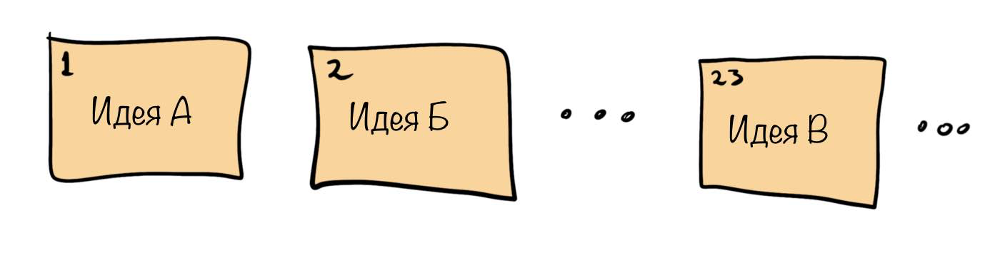
Изображение предоставлено автором. (CC BY-SA 4.0)
Если позднее вы захотите добавить несколько карточек между номерами 1 и 2, просто положите их туда с промежуточными номерами 1/1, 1/2, 1/3 и так далее:
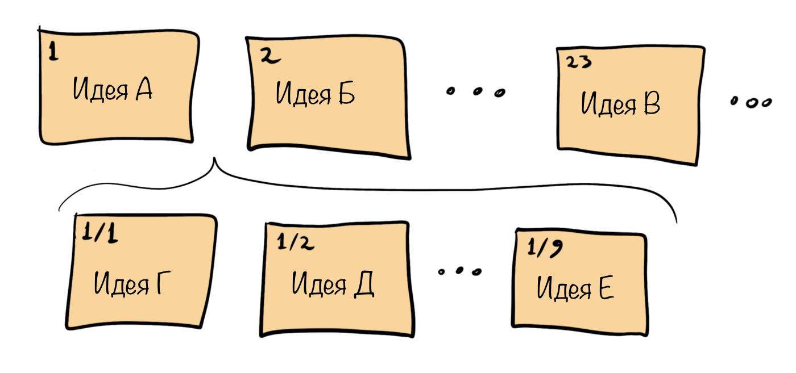
Изображение предоставлено автором. (CC BY-SA 4.0)
Добавляя дополнительные знаки дроби, можно размещать новые карточки между предыдущими. Например, чтобы добавить карточки между номерами 1/1 и 1/2, поставьте на них 1/1/1, 1/1/2, 1/1/3 и так далее.
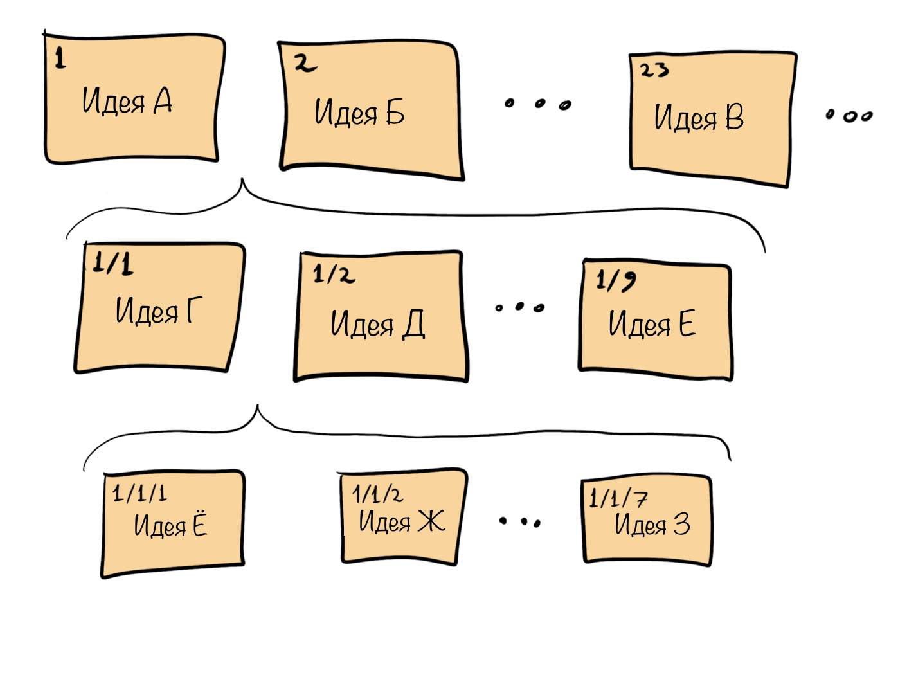
Изображение предоставлено автором. (CC BY-SA 4.0)
Теперь, чтобы создать связь между двумя карточками, вам нужно использовать идентификатор. Например, если вы хотите создать связь от карточки 1/1 к карточке 1, просто напишите цифру 1 где-то на карточке 1/1. Также, если вы хотите создать связь между карточкой 23 и карточкой 2, напишите 2 где-то на карточке 23. Продолжая действовать таким образом, вы можете соединить все карточки так, как хотите.
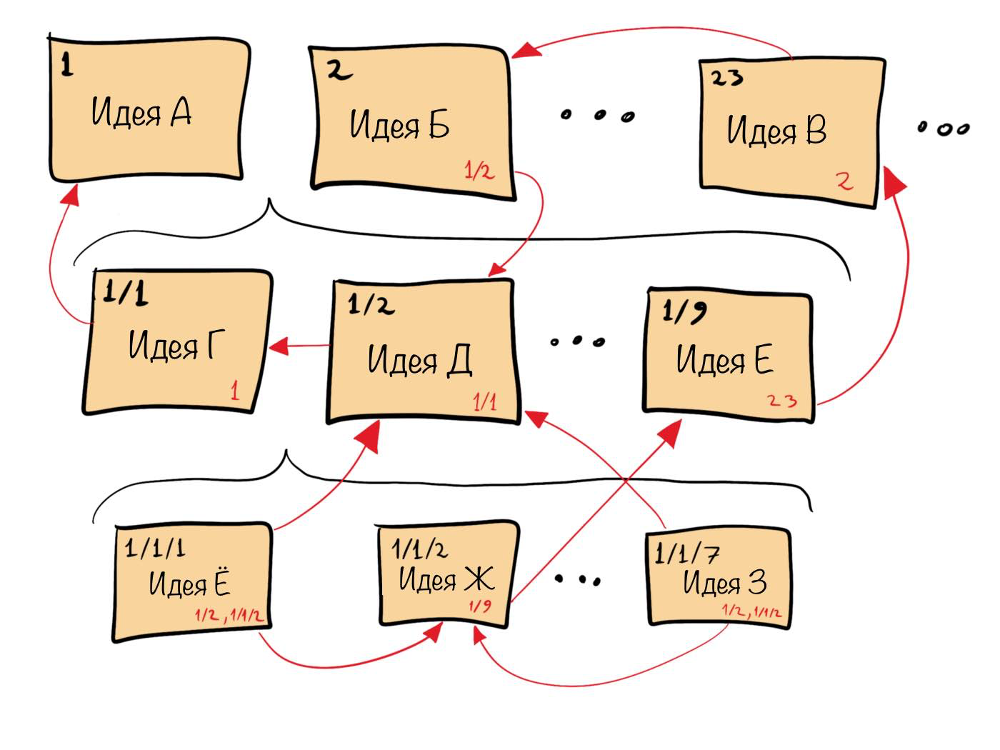
Изображение предоставлено автором. (CC BY-SA 4.0)
Если вы хотите добавить на карточки теги, просто запишите их вместе с заметкой:
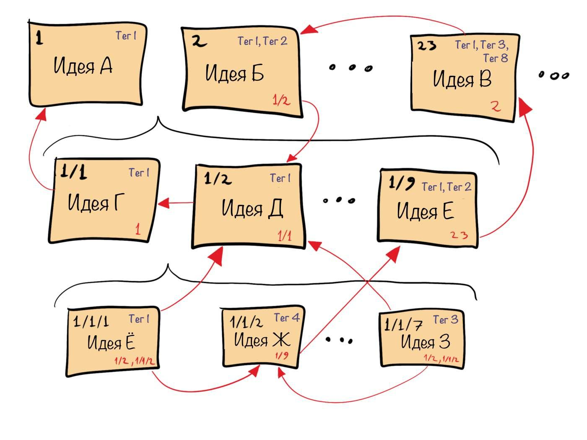
Изображение предоставлено автором. (CC BY-SA 4.0)
А чтобы было легче найти карточки с отдельными тегами, создайте заметку, где вы их все перечислите, а после каждого тега запишете список заметок, которые его используют:
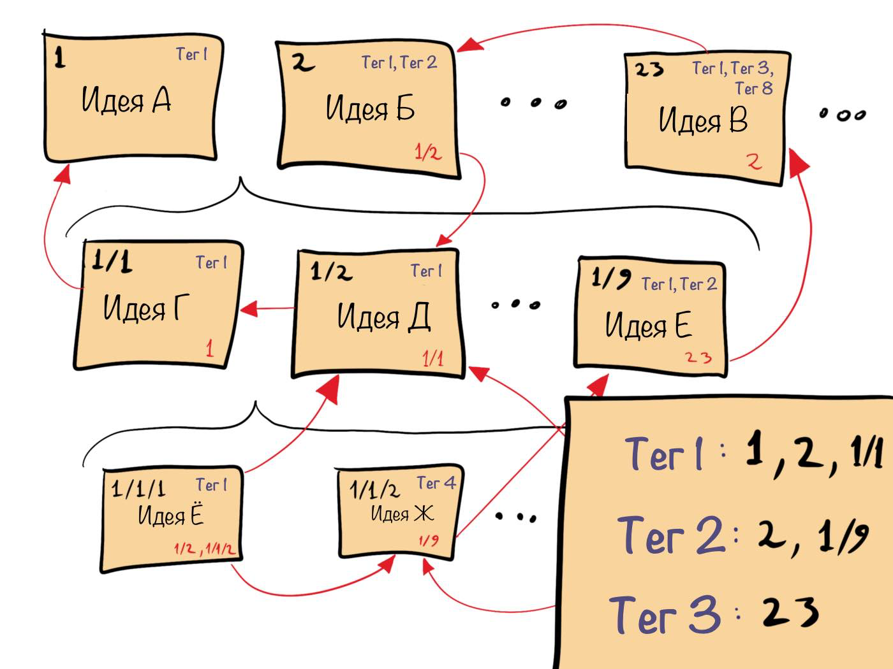
Изображение предоставлено автором. (CC BY-SA 4.0)
Вот и всё! Это базовое применение метода Zettelkasten с использование бумажных карточек. Луман делал всё именно так, за исключением того, что он использовал буквенно-цифровую систему, чтобы идентифицировать свои карточки. Никлас обнаружил, что легче всего для этого использовать комбинации цифр и букв. Если любопытно, посмотрите его карточки здесь (важно заметить, что заметки на карточках на немецком, именно так, как он их писал).
Цифровые решения
Если хотите перейти в цифру, у вас есть несколько вариантов. Вы можете использовать приложения такие как Зеттлр, Эверноут, 1Врайтер, айэ Врайтер, или любые другие их аналоги, перечисленные на Zettelkasten.de. Вы также можете использовать личные вики, плагины для редакторов текста, такие как Вим или Саблайм, или использовать комбинацию аналогового и цифрового, когда вы записываете заметки на бумаге, а потом сканируете их.
Так как Zettelkasten задумывался для того, чтобы использоваться на протяжении всей жизни, я бы советовал создать систему, которая не будет иметь проблем в будущем и не привязана к конкретному производителю. Лично я использую для этого простой текст без форматирования.
Мой Zettelkasten — это папка в Дропбоксе. Это позволяет иметь доступ к Zettelkasten с компьютера, телефона или любого браузера. Каждая заметка — отдельный текстовый файл, который лежит внутри этой папки. Там нет подпапок. Всё максимально горизонтально.
Когда я создаю новую заметку, генерируется новый текстовый файл, название которого представляет отметку времени и заголовок, как советует Кристиан с Zettelkasten.de. Например, прямо сейчас 16 декабря 2019 года, 13:52. Так что если я создам заметку, озаглавленную «Zettelkasten прекрасен», то она станет новым файлом с названием 201912161352-Zettelkasten-прекрасен.txt.
Потом я пишу содержание заметки, используя комбинацию маркдауна и ссылок в стиле вики с двойными скобками. Так файл 201912161352-Zettelkasten-прекрасен.txt может содержать следующую информацию:
# 201912161352 Zettelkasten прекрасен
#заметки #письмо #продуктивность
Система ведения заметок Zettelkasten лучшая на свете.
## Ссылки
- [[201912070830-Принципы-Zettelkasten]]
- [[201912080935-Краткая биография Никласа Лумана]]
Первая строка — заголовок заметки, вторая — список из трёх хэштегов, следующая — идея, которую я записал, и последние две: ссылки на документы:
201912070830-Принципы-Zettelkasten.txt
201912080935-Краткая биография Никласа Лумана.txt
Так как этот файл всего лишь простой текст, его можно открыть с помощью любого текстового редактора на любом компьютере, телефоне или планшете. Это защищает систему от любых проблем в будущем и делает независимой от отдельных приложений. Но если у вас есть хороший текстовый редактор, который поддерживает маркдаун и ссылки в стиле вики с двойными скобками, то вы видите уже отформатированную заметку. Например, с 1Врайтер для Айпада, она выглядит так:
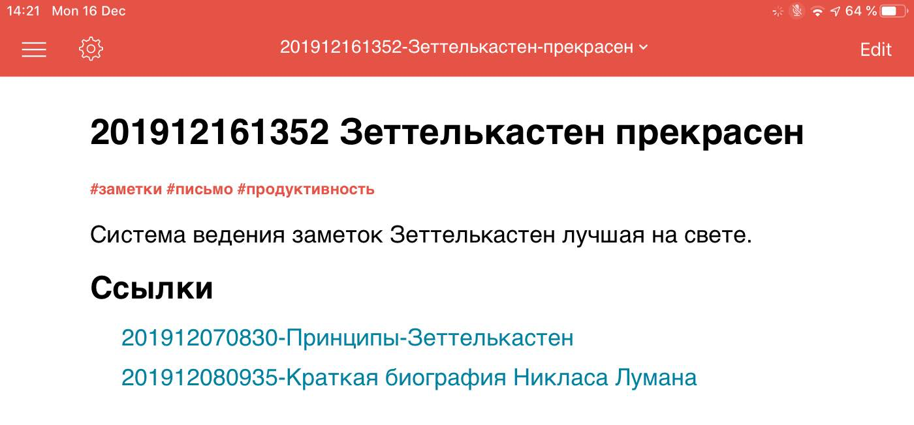
Скриншот сделан автором
Клики на голубые ссылки открывают необходимые файлы. Это делает навигацию по Zettelkasten удобной. Однако, я бы мог воспользоваться любым другим редактором текста, который поддерживает маркдаун и ссылки в стиле вики или даже их не поддерживает. Во втором случае, мне бы пришлось выделить текст между двумя скобками, нажать контрол+си, чтобы скопировать название файла, который я хочу открыть, а потом нажать контрол+ви, чтобы вставить название файла в любой инструмент, который я собираюсь использовать, чтобы открыть следующий файл.
В итоге
Zettelkasten Лумана отличается от других систем ведения заметок. Вместо того, чтобы быть помощником для следующего письменного проекта, метод создан, чтобы помогать вам на протяжении всей жизни думать, писать и публиковать. Он создан, чтобы собирать так много заметок, как вы хотите, без того, чтобы превращаться в непригодный для работы бардак. Его основная цель — найти зависимости между кажущимися несвязанными идеями.
Луман отрицал организацию заметок исключительно линейно или в соответствии с заданными категориями. Вместо этого он превратил свою базу знаний в сеть идей, которая росла органически.
Если вы примените метод в своей жизни, то обнаружите множество идей, склеенных с книгами и блокнотами, сайтами, газетами и другими источниками. С методом Zettelkasten вашей работой станет освобождение этих идей из плена их источников и превращение их в заметки, собранные в основном хранилище — вашем Zettelkasten — где они будут соединены с другими заметками. В конечном итоге вы создаёте коллекцию идей, где нет границ между их типами, между тем, старые они или новые. Каждая идея легко переплетается с другими и даёт начало новым идеям. Это чётко отделяет метод от других систем ведения заметок, основанных на блокнотах, папках или тегах.
Так что если вы беспокоитесь о запоминании идей, на которые вы наталкиваетесь, если вы заботитесь о том, как идеи связаны друг с другом, если вы хотите, чтобы у вас рождались собственные идеи, попробуйте метод Zettelkasten. Он создан для управления идеями в крупном масштабе и сделал Лумана потрясающе плодовитым писателем.